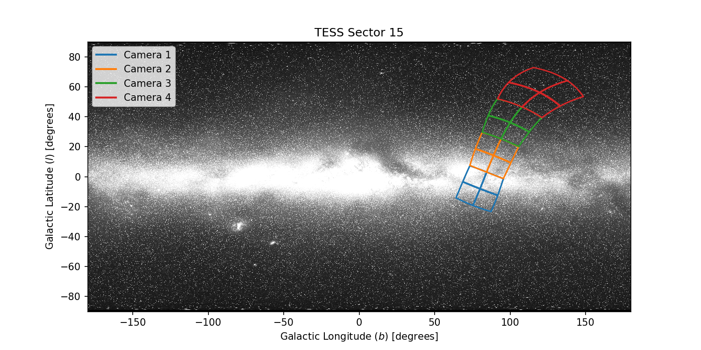
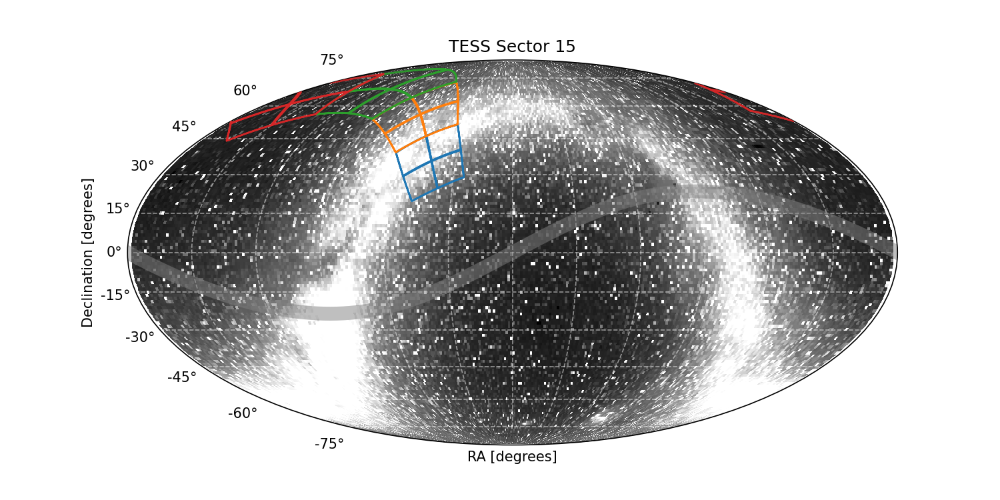

|  |  |
×
Sector 15 was reprocessed in September 2020, updating timestamps, photometric apertures, data anomaly flags, and threshold crossing events. For more deatil please see the Reprocessing Information table below.
×
Warning for Sector 15: A single upset event in the star trackers caused the spacecraft to fall out of fine pointing in orbit 38. The issue lasts for 5 minutes at TJD 1725.93651 (cadences 358907, 358908, and 358909).
Sector 15 Information
For full data release notes see: DRN21, DRN30 (reprocessing). For a list of TIC IDs with noted issues, see this list.
Sector Summary
Spacecraft Pointing (deg)
| RA | dec | roll | |
|---|---|---|---|
| Spacecraft | 280.4 | 64.07 | 55.43 |
| Camera 1 | 316.91 | 35.57 | 116.28 |
| Camera 2 | 298.18 | 55.9 | 129.96 |
| Camera 3 | 252.38 | 68.63 | 351.2 |
| Camera 4 | 196.75 | 60.86 | 42.32 |
Orbit Summary
| Orbits | Dates (UTC) Start - End |
Cadence # Start - End |
Momentum dumps |
|---|---|---|---|
| 37 | 2019-08-15 - 2019-08-28 | 348411 - 357409 | Every 4.25 days |
| 38 | 2019-08-29 - 2019-09-10 | 358186 - 367167 | Every 4.25 days |
Sector Notes
| Noted Issue | Description |
| Star tracker anomaly | A single upset event in the star trackers caused the spacecraft to fall out of fine pointing in orbit 38. The issue lasts for 5 minutes at TJD 1725.93651 (cadences 358907, 358908, and 358909). |
| Spacecraft pointing | As in Sector 14, the pointing in Sector 15 was set at +85 degrees in ecliptic latitude, so that Camera 2 and Camera 3 straddle the ecliptic pole. Camera 1 still suffers from strong scattered light signals, and so guiding was disabled in Camera 1 for both orbits 37 and 38. Camera 4 alone was used for guiding during this sector. |
| Scattered light | In Sector 15, the Earth is above the sunshade for almost the entire sector. The 24 hour rotation period of the Earth and several harmonics thereof are visible as oscillations in the background for most of both orbits. Finally, the Earth passes close to Camera 1 towards the last quarter of each orbit and saturates the detectors—these times were excluded with CCD-specific “Scattered Light” flags. |
Reprocessing Information: DRN30
The data products of sectors 14 to 19 were generated using version 4.0 of the science processing pipeline and conform to the final set of data anomaly flags. A detailed description of the changes in the data products can be found in DRN30, but a summary is provided here.
| Update | Description |
| Timestamps: | For 2 minute cadence and FFI data the timestamps were made more accurate. The differences between reprocessed data and previous data releases are less than 2.0 seconds in all cases. |
| Photometric apertures: | The apertures were increased in size for targets with Tmag less than 11. |
| Data Anomaly Flags: | Three new flags were added to mitigate the effects of scattered light; - Cadences with strong scattered light signals or saturation effects that corrupt the calibration data are flagged and removed from analysis. - Scattered light data anomaly flags are customized for each target, and flagged automatically based on the local background level. - Cadences with insufficient targets to derive cotrending basis vectors are flagged and the PDCSAP FLUX light curves are set to NULL at these times The modifications to the data anomaly flags also changed the cotrended light curves produced by PDC. The changes also result in new cotrending basis vectors for each CCD in each sector. The scattered light flags are now only applied to the PDCSAP FLUX light curves. |
| Threshold Corssing Event issue: | The planet search of the reprocessed light curves produced a different set of TCEs from the original processed data. Although there is a high degree of overlap between the original and reprocessed data (∼83% of targets produced TCEs in common), new TCEs were produced and not every TCE from previous data releases was recovered. |